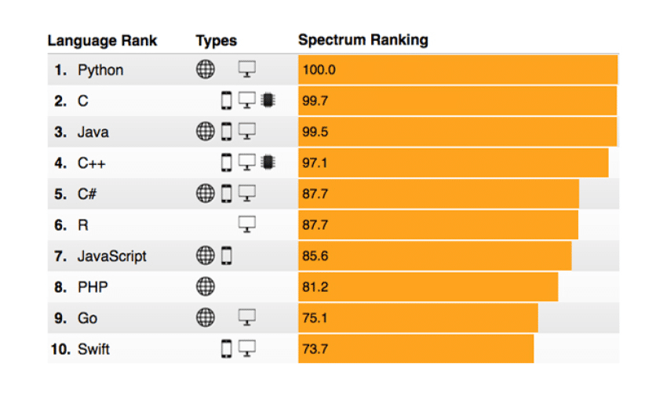

Linguagens Mais Usadas no mundo

Ranking em 2017
A evolução entre 2017 e 2025 reflete a transição de um mercado focado em desenvolvimento web e mobile tradicional para uma era dominada pela Inteligência Artificial e pela Nuvem. Naquela época, o Python já liderava, mas sua posição hoje é inabalável porque ele se tornou a "língua oficial" da IA Generativa e da Ciência de Dados, áreas que explodiram nos últimos anos. Enquanto em 2017 linguagens como C e Java ainda disputavam o topo pelo seu uso em sistemas antigos e corporativos, hoje elas dividem o palco com tecnologias que priorizam a agilidade e a capacidade de processar volumes massivos de dados em tempo real.
Outra mudança drástica foi o amadurecimento das linguagens quanto à segurança e escalabilidade. O TypeScript, que era apenas uma promessa em 2017, hoje é o padrão absoluto para grandes projetos web, corrigindo as falhas do JavaScript que aparecia timidamente na sua imagem. Da mesma forma, vimos a ascensão do Rust como uma alternativa segura ao C++ para evitar erros críticos de memória, e o Go se consolidando como a ferramenta principal para infraestruturas de nuvem (Cloud). O foco mudou: antes buscávamos apenas "fazer funcionar" em diferentes dispositivos; agora, o mercado exige que o código seja, acima de tudo, inteligente, seguro e pronto para a escala global.
O futuro da programação com IA
A inteligência artificial (como o GitHub Copilot ou o Cursor) já lida com o "trabalho sujo": boilerplate, sintaxe repetitiva e testes unitários. No futuro, o desenvolvedor atuará como um arquiteto ou maestro. Em vez de gastar horas corrigindo um parêntese esquecido, ele gastará tempo definindo a intenção, a arquitetura e as regras de negócio. O código será o produto final gerado, mas o design intelectual continuará sendo humano.
Projetos que antes levavam meses com uma equipe inteira poderão ser feitos em dias por uma única pessoa. Isso permitirá que o foco mude da "viabilidade técnica" para a inovação. Veremos uma explosão de softwares personalizados: ferramentas criadas sob medida para resolver problemas hiper-específicos que antes não valeriam o custo de desenvolvimento.